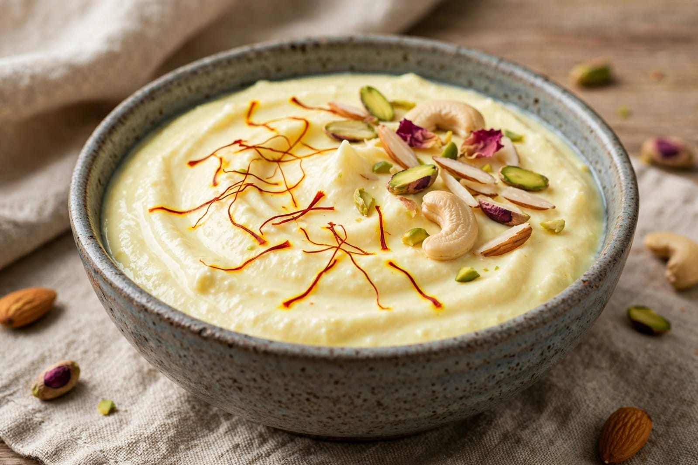
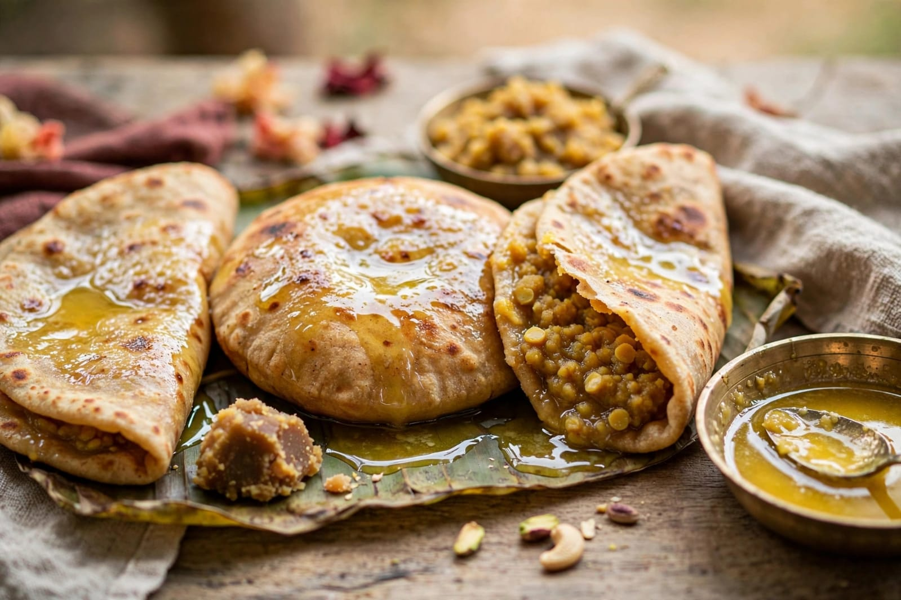

About Gudi Padwa
Gudi Padwa is a traditional festival celebrated mainly in Maharashtra and some other parts of India. It marks the beginning of the new year according to the traditional Marathi calendar. The festival is celebrated with happiness, prayers and family gatherings. People decorate their homes and prepare traditional food for the occasion.
One of the most important features of Gudi Padwa is the Gudi, which is raised outside homes. A bright cloth, a decorative garland and a metal pot are traditionally placed on a bamboo stick to make the Gudi. It is considered a symbol of prosperity, happiness and a fresh beginning. People also create colourful rangoli designs near their homes.
On Gudi Padwa, people wear traditional clothes and visit temples with their families. Homes are cleaned and decorated before the festival. Traditional processions and cultural activities may also be organized in different places. Special dishes and sweets are prepared and shared with family members and friends. The festival represents hope, prosperity and the beginning of a new year.
Special Foods

Puran Poli
Puran Poli is a popular sweet flatbread prepared for Gudi Padwa.

Shrikhand
Shrikhand is a traditional sweet dish made from thickened curd.

Puran
Puran is a sweet filling made mainly from lentils and jaggery.